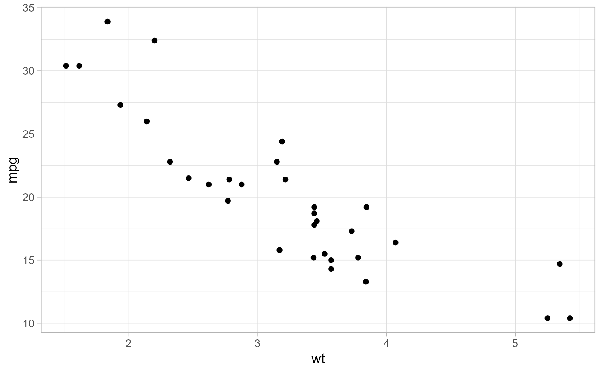

A theme_light wrapper applied to every figure this
package draws, so the PNGs a run writes share one look.
evaluate_weather_generator() returns its diagnostic plots as ggplot
objects, so this is exported: without it, a caller re-rendering one of those
plots cannot reproduce the package's styling.
Details
base_size is 12 rather than theme_light()'s native 11 because 12
is what the evaluation pipeline has always produced. The title and subtitle
sizes are rel rather than absolute points so they track
base_size; they were previously fixed at 14 and 10 and would have been
stranded by any change to it.
Legend text is deliberately not set here. Exactly one exported figure has a visible legend, so its styling stays local to that plot rather than becoming a package-wide rule inferred from a single case.
Examples
library(ggplot2)
#> Warning: package 'ggplot2' was built under R version 4.6.1
ggplot(mtcars, aes(wt, mpg)) +
geom_point() +
theme_weathergenr()
